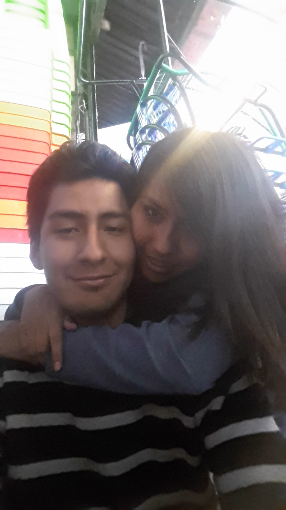
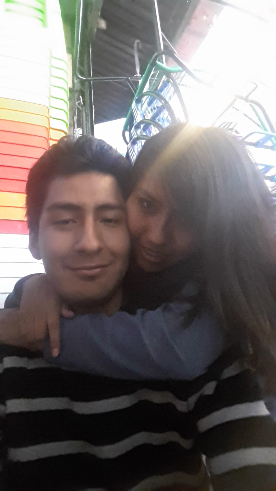

Feliz mes aniversario mi esposhita, eres la mejor del mundo, enserio que no te cambiaria por nada del mundo, espero que este regalo te guste mucho, a pesar de todo lo que pasamos juntos te sigo demostrando mi amor por ti, te amo mucho y siempre lo hare, cuando tengas problemas sabes que siempre estare ahi..
TE AMO MUCHISIMO
Tercer año de mucho esfuerzo y trabajo en equipo...
 Quisiera que me besaras hasta dejarme sin aliento. Perder el conocimiento, tocar el cielo contigo...
Quisiera que me besaras hasta dejarme sin aliento. Perder el conocimiento, tocar el cielo contigo...
 Amor, el mejor consuelo de todos es estar entre tus brazos.
Amor, el mejor consuelo de todos es estar entre tus brazos.
 Mi hogar son tus brazos.
Mi hogar son tus brazos.
 Nunca he disfrutado de los silencios, pero es que contigo son una melodía para mis oídos.
Nunca he disfrutado de los silencios, pero es que contigo son una melodía para mis oídos.
 Sean cuáles sean tus metas, estaré a tu lado siempre para apoyarte y agradecerte la confianza.
Sean cuáles sean tus metas, estaré a tu lado siempre para apoyarte y agradecerte la confianza.
 Cariño mío, espero que nunca me olvides, porque si no me estarás matando.
Cariño mío, espero que nunca me olvides, porque si no me estarás matando.
 Mi confianza en ti es plena, vida mía, sé que puedes llegar a lo que te propongas.
Mi confianza en ti es plena, vida mía, sé que puedes llegar a lo que te propongas.
 Pasaría tres vidas buscándote, pero aún así no me rendiría.
Pasaría tres vidas buscándote, pero aún así no me rendiría.
 Nadie me hace tan feliz como tú.
Nadie me hace tan feliz como tú.
 Mi corazón llora por amarte, mis manos por acariciarte, mi boca por besarte.
Mi corazón llora por amarte, mis manos por acariciarte, mi boca por besarte.
 Nada se compara a lo que siento al estar contigo.
Nada se compara a lo que siento al estar contigo.
 Gracias por existir, amor.
Gracias por existir, amor.
 No me importa cuáles sean tus planes... mientras me incluyas en ellos.
No me importa cuáles sean tus planes... mientras me incluyas en ellos.
 Nuestro amor es un récord, es infinitamente perfecto.
Tu belleza y tu ternura nubla la gravedad de mis problemas... gracias por todo.
Nuestro amor es un récord, es infinitamente perfecto.
Tu belleza y tu ternura nubla la gravedad de mis problemas... gracias por todo.
Cuarto año lleno de sopresas y expectativas...
Cada vez que me besas, por dentro me recorre una voz: es lo mejor que me ha pasado en la vida.
Te dedico mi vida, es lo que menos que puedo hacer cuando tú me entregaste tu amor.
 Te amo por lo que eres, no por lo que ven los demás.
Te amo por lo que eres, no por lo que ven los demás.
 No soy arquitecto, pero gracias a ti he construido un rascacielos de felicidad.
No soy arquitecto, pero gracias a ti he construido un rascacielos de felicidad.
 Esto que tengo contigo, que no sé exactamente qué es, no seré capaz de tenerlo nunca con nadie más.
Lo mejor de soñar contigo es que el sueño no termina cuando me despierto...
Esto que tengo contigo, que no sé exactamente qué es, no seré capaz de tenerlo nunca con nadie más.
Lo mejor de soñar contigo es que el sueño no termina cuando me despierto...
.jpg) Quiero decirte mil cosas, pero ni una vida será suficiente para expresarlas todas.
Amor, no hay universo que pueda eclipsar tantísima belleza.
Con tu sonrisa me basta, ya que verte sonreír es lo que me motiva todos los días.
El amor no tiene cura, pero es la única cura para todos los males.
Al final, es así de sencillo: no me importa nada si puedo estar contigo.
Que bonita es la vida a tu lado... daría lo que fuera para no cambiar nunca cómo estamos.
Eres mi princesa y siempre lo serás; que los miedos no te impidan conocer esa verdad.
Una sonrisa de tus labios lo puede todo... a todo renunciaría para verte feliz.
Tu dulzura, mi cariño y nuestro amor para siempre. ¿Qué te parece?
Quiero decirte mil cosas, pero ni una vida será suficiente para expresarlas todas.
Amor, no hay universo que pueda eclipsar tantísima belleza.
Con tu sonrisa me basta, ya que verte sonreír es lo que me motiva todos los días.
El amor no tiene cura, pero es la única cura para todos los males.
Al final, es así de sencillo: no me importa nada si puedo estar contigo.
Que bonita es la vida a tu lado... daría lo que fuera para no cambiar nunca cómo estamos.
Eres mi princesa y siempre lo serás; que los miedos no te impidan conocer esa verdad.
Una sonrisa de tus labios lo puede todo... a todo renunciaría para verte feliz.
Tu dulzura, mi cariño y nuestro amor para siempre. ¿Qué te parece?
Por más momentos juntos :) ....
 Entrégame el tiempo que te sobre, y lo gastaré en hacerte la persona más feliz del planeta.
Solo entendí qué era el amor cuando llegaste a mi vida y le diste sentido.
Me cuesta pensar que has estado ahí siempre... y que he tardado tanto en encontrarte, amor.
Dios se endeudó conmigo, y por eso me trajo a ti.
Te amo en colores que aún no has visto.
Entrégame el tiempo que te sobre, y lo gastaré en hacerte la persona más feliz del planeta.
Solo entendí qué era el amor cuando llegaste a mi vida y le diste sentido.
Me cuesta pensar que has estado ahí siempre... y que he tardado tanto en encontrarte, amor.
Dios se endeudó conmigo, y por eso me trajo a ti.
Te amo en colores que aún no has visto.
 Te amo en formas que jamás podrías adivinar...
Tú eres la estrella de mi universo.
Hay muchas mujeres preciosas en este mundo, pero yo solo te amo a ti.
Temo despertarme una mañana y que ya no estés al otro lado de la cama.
Mis ojos nunca supieron guardarme todo el amor que siento por ti.
El día más oscuro será aquel en que no pueda encontrarte, amor.
Te amo en formas que jamás podrías adivinar...
Tú eres la estrella de mi universo.
Hay muchas mujeres preciosas en este mundo, pero yo solo te amo a ti.
Temo despertarme una mañana y que ya no estés al otro lado de la cama.
Mis ojos nunca supieron guardarme todo el amor que siento por ti.
El día más oscuro será aquel en que no pueda encontrarte, amor.
 Tu mano tocando la mía... así es como chocan las galaxias.
Tu mano tocando la mía... así es como chocan las galaxias. Aunque la sonrisa es mía, tú eres la razón por la cual sonrío.
Aunque la sonrisa es mía, tú eres la razón por la cual sonrío. Te amo por tu forma de ser, no por como tú dices ser.
Te amo por tu forma de ser, no por como tú dices ser. Si no lo confiesa tu boca, ya lo hará tu corazón o tu respiración.
Si no lo confiesa tu boca, ya lo hará tu corazón o tu respiración. El tiempo que nos quede, sea el que sea, quiero pasarlo a tu lado.
El tiempo que nos quede, sea el que sea, quiero pasarlo a tu lado. Si el amor no está lleno de un poco de locura, no es amor...
Si el amor no está lleno de un poco de locura, no es amor... Tu amor... ese es el latido más largo de mi corazón.
Tu amor... ese es el latido más largo de mi corazón. Lo único que siempre he querido ha sido verte sonreír.
Lo único que siempre he querido ha sido verte sonreír. Eres la razón por la que no hay nadie más en mi vida. Eres la razón por la que nunca habrá nadie más.
Eres la razón por la que no hay nadie más en mi vida. Eres la razón por la que nunca habrá nadie más. Cada mañana cuando despierto, tú eres la razón por la que sonrío; tú eres la razón por la que am
Cada mañana cuando despierto, tú eres la razón por la que sonrío; tú eres la razón por la que am Prometo hacer del camino una aventura, sin olvidar quien y como eres
Prometo hacer del camino una aventura, sin olvidar quien y como eres Desde el primer momento que te vi, supe que te quería a mi lado para siempre
Desde el primer momento que te vi, supe que te quería a mi lado para siempre Ni siquiera el tiempo podrá romper todo lo que tenemos.
Ni siquiera el tiempo podrá romper todo lo que tenemos. Tú eres la historia más bonita que el destino escribió en mi vida
Tú eres la historia más bonita que el destino escribió en mi vida Cuando alguien lo es todo, la distancia no significa nada.
Cuando alguien lo es todo, la distancia no significa nada. No te quiero para mí, te quiero conmigo. Es diferente
No te quiero para mí, te quiero conmigo. Es diferente Eres esa persona que tiene el privilegio de hacerme sonreír con tan solo escribirme.
Eres esa persona que tiene el privilegio de hacerme sonreír con tan solo escribirme.